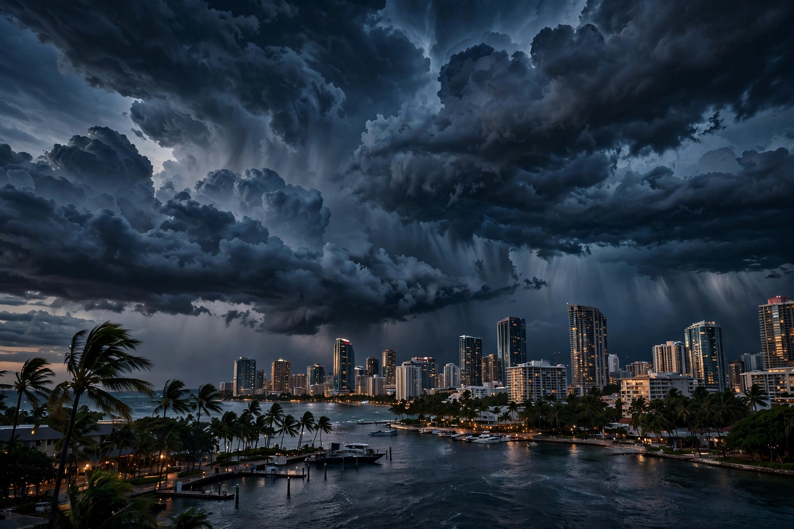

Mưa Sài Gòn · Dữ liệu mẫu15:00
Khả năng mưa71%Lượng mưa1.1 mm
Trời đổ ập như ai hất cả xô nước.
Một ngày Sài Gòn đi từ yên ắng đến cao trào — rồi trả bầu trời về đêm.
Mưa mạnh nhất lúc 15:00 · kéo xoay và chạm một khung giờ

Trời đổ ập như ai hất cả xô nước.
Sáng mở đầu bằng một khoảng trời còn giữ được nhịp thở chậm.
Rê ngang để tua ánh sáng. Mặt đường bắt đầu phản chiếu một màu bạc lạnh.
Chạm gọi sét. Kéo ngang để bẻ hướng cơn bão.
Khép lại một ngàyTổng ~2 mm
Phố ướt loáng, đèn vàng lên.
Hai mươi bốn nan mưa. Một vòng tay để tua lại cả ngày.
Mưa tăng nhanh từ giữa trưa, đạt đỉnh vào khoảng 15:00 rồi giảm dần khi thành phố lên đèn.
Phía đông đón mưa sớm hơn, cường độ cao nhất trong khung 14:00–16:00.
Mưa đến theo đợt ngắn, xen giữa là những khoảng trời dịu và gió nhẹ.
Mây dày lên sau buổi trưa; mưa rõ nhất dọc khoảng giữa chiều.
Cơn mưa đi nhanh, mạnh nhất lúc 15:00 rồi tạnh dần trước buổi tối.